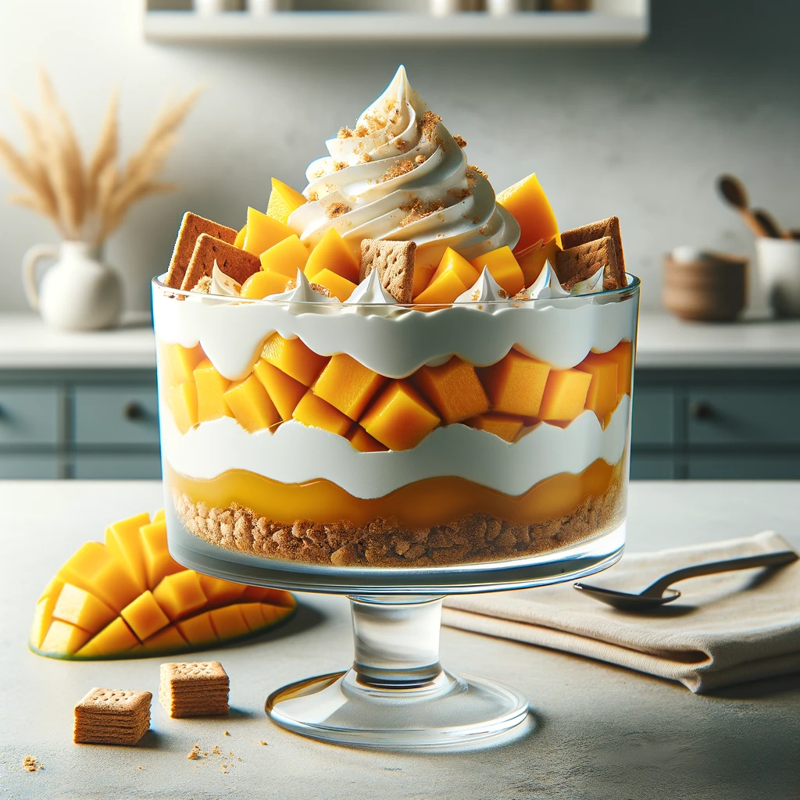

Mango Float

Description
A delightful Filipino dessert featuring layers of ripe mangoes, graham crackers, and whipped cream.
Ingredients
- Ripe mangoes
- Graham crackers
- Whipping cream
- Sweetened condensed milk
Steps
- Peel and slice the ripe mangoes thinly.
- In a bowl, whip the cream until stiff peaks form, then fold in sweetened condensed milk.
- In a serving dish, layer graham crackers, whipped cream mixture, and sliced mangoes.
- Repeat the layers until you reach the desired thickness.
- Finish with a layer of whipped cream on top and garnish with mango slices.
- Chill in the refrigerator for at least 4 hours before serving. Enjoy the creamy, fruity goodness of mango float!